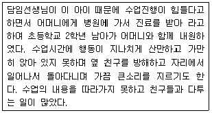
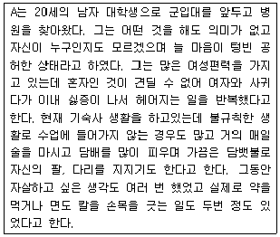
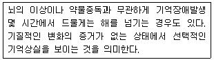
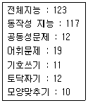
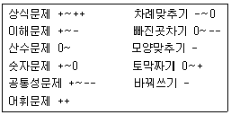
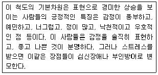
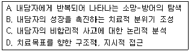
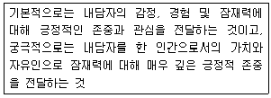

1과목: 심리학개론
1. 심리검사의 타당도를 측정하는 방법 중 검사의 내용이 측정하려는 속성과 일치하는지를 논리적으로 분석 검토하여 결정하는 것은?
2. 성격이론에 대한 설명으로 틀린 것은?
3. 어떤 신입지원자의 단정한 외모를 좋게 본 면접관이 그 지원자가 예의 바르고, 성격이 좋으며, 능력도 뛰어날 것이라고 추론하여 좋은 점수를 준다면 이는 어떤 이유 때문인가?
4. 영희는 시험 중에 커닝을 하고 싶었지만 들키게 되면 선생님이 자신을 인정하지 않고 혼낼까봐 두려워서 커닝을 하지않았다. 영희는 Kohlberg의 도덕성 단계 중 어디에 해당하지 않았다. 영희는 Kohlberg의 도덕성 단계 중 어디에 해당하는가?
5. 현상학적 이론에 대한 설명으로 틀린 것은?
6. 대상에 대해 상반되는 정보가 순서대로 제시되는 경우, 먼저 제시된 정보가 나중에 제시된 정보보다 인상형성에 더 큰 영향을 미치는 현상은?
7. 개인이 태도를 형성하는 과정을 일관성 원리로 설명하고자하는 이론 중에서 최소노력의 원리를 이용하여 변화의 방향성을 예언하는 이론은?
8. 기억에 정보를 저장하기 위해서 환경의 물리적 정보의 속성을 기억에 저장할 수 있는 속성으로 변화시키는 과정은?
9. 사람이 아무리 노력하여도 주어진 상황이 절대로 바뀌지 않을 때 “학습된 무력감(learned helpessness)'을 느끼게 된다고 주장한 이론가는?
10. 귀인에 대한 설명으로 틀린 것은?
11. 조련사가 돌고래를 훈련시키는 과정을 설명할 수 있는 조건형성 현상은?
12. Piaget의 인지발달 단계에 대한 설명으로 맞는 것은?
13. 다음 중 프리맥(Premack)의 원리를 이용한 강화가 아닌 것은?
14. Kelley의 공변원리에 의하면 3가지 정보를 이용해 귀인이 이루어진다고 본다. 이 3가지 정보에 포함되지 않는 것은?
15. 노름꾼들이 빠찡꼬에서 헤어 나오지 못하는 것은 강화계획 중 어디에 해당하는 현상인가?
16. 노년기의 일반적인 성격변화에 해당하지 않는 것은?
17. 다음 중 감각기억에 대한 설명으로 틀린 것은?
18. A타입 성격의 특성이 아닌 것은?
19. 기쁨이나 만족을 제거함으로써 특정 행동의 발생확률을 감소시키는 것은?
20. 인간의 성행동을 연구한 Kinsey 등은 남성의 성행동과 여성의 성행동을 주로 어떤 방법을 통해 연구했는 가?
2과목: 이상심리학
21. 18세 이상의 성인에게 진단되며, 15세 이전에 품행 장애를 나타낸 증거가 있어야만 내릴 수 있는 성격장애는?
22. 다음의 환자에게 가능한 진단명은?

23. 신진대사 이상으로 오는 정신지체와 관계없는 것은?
24. 다음의 환자는 어떤 진단 범주에 해당하는가?

25. 품행장애의 특징으로 옳은 것은?
26. 알코올 의존의 원인으로 틀린 것은?
27. 소아기 자폐증의 임상양상에 대한 설명으로 틀린것은?
28. DSM-IV에서 성격장애를 몇 개의 군으로 나누고 있다. 이중 극적이고 감정적이며 변덕스럽고 충동적인 행동을 특징으로 하는 군에 해당하지 않는 것은?
29. 여성의 알코올 중독에 관한 설명으로 옳은 것은?
30. 주의력 결핍 및 과잉행동장애의 DSM-IV 진단기준으로 맞지 않는 것은?
31. 아동청소년기 정신장애에 관한 설명 중 틀린 것은?
32. 다음은 해리성 장애의 어떤 분류에 해당되는가?(오류 신고가 접수된 문제입니다. 반드시 정답과 해설을 확인하시기 바랍니다.)

33. 양극성 장애와 주요 우울장애의 비교설명으로 맞는 것은?
34. 망상장애의 하위유형의 내용이 맞는 것은?
35. 다음 중 과제수행에 필요한 여러 가지 인지기능 즉 과제를 하위과제로 쪼개기, 순서별로 배열하기, 계획하기, 시작하기, 결과 점검하기, 중단하기 등의 기능을 수행하지 못하는 치매증상은?
36. 환각(hallucination)은 다음 중 어떤 부분의 왜곡인가?
37. 이상행동에 대한 모델과 그 설명으로 맞는 것은?
38. 조증 삽화의 진단과 관련된 증상은?
39. 다음 중 DSM-IV의 틱장애에 대한 설명으로 틀린 것은?
40. DSM-IV에서 신체형 장애의 하위 범주에 속하는 것은?
3과목: 심리검사
41. 동일한 검사를 동일한 집단에 1주일 또는 1개월의 간격을 두고 다시 실시하여 전후 검사 결과를 상관계수로 계산하는 신뢰도는?
42. 성취도 검사와 적성검사의 특성에 대한 설명으로 맞는 것은?
43. 두뇌의 좌측 측두엽 손상시 주로 나타나는 현상은?
44. 22세 된 여대생이 수업시간에 집중이 잘 안되고, 수업내용을 따라가기 어렵다는 이유로 지능검사를 받았고, 그 결과는 다음과 같다. 이 결과에 대한 해석으로 틀린 것은?

45. 발달검사를 사용할 때 고려해야 할 사항이 아닌 것은?
46. 임상환자의 WAIS검사 반응 특징으로 평균에서의 이탈도가 다음과 같이 나타났을 때 이에 대한 설명으로 맞는 것은?

47. 정신과에 내원한 환자에게 MMPI를 실시한 결과 L, K 척도는 40점 이하 , F 척도는 80점 이상으로 나왔다. 이 피검사자가 보일 수 있는 문제로 적합하지 않은 것은?
48. 다음 중 발달적 선별검사의 설명으로 틀린 것은?
49. 주제 통각 검사 (Thematic Apperception Test : TAT) 에 대한 설명으로 틀린 것은?
50. 로르샤하 (Rorschach) 검사에서 반응의 결정인자인 운동 반응 (Movement : M)에 대한 설명으로 틀린 것은?
51. 투사적 성격검사와 비교할 때, 객관적 성격검사의 장점은?
52. 초등학교 학생의 성취도를 알아보기 위하여 평가를 실시하고자 한다. 성취도 검사의 범주에 포함되지 않는 것은?
53. 신경심리검사에 대한 설명으로 맞는 것은?
54. J. P. Guilford의 지능구조 입체모형설의 구성내용에 포함되지 않는 것은?
55. 웩슬러 지능검사의 소검사 중 병전 지능 추정에 사용할 수 있는 것은?
56. MMPI의 임상척도 중 자신의 신체적 기능 및 건강에 대하여 과도하고 병적인 관심을 갖는 건강염려증적인 양상을 측정하는 척도는?
57. 다음은 다면적 인성검사(MMPI)의 임상척도 중 어떤 척도에 대한 설명인가?

58. 지능과 관련된 설명으로 옳지 않은 것은?
59. 표준화된 검사가 다른 검사에 비하여 객관적인 해석을 가능하게 해주는 이유는?
60. Gesell의 발달척도를 토대로 제작된 한국형 영유아 발달 검사의 평가영역은?
4과목: 임상심리학
61. 내담자중심 치료에서 치료자의 주요 기능이 아닌 것은?
62. 심리적 자문에 대한 설명으로 틀린 것은?
63. 임상심리학자는 내담자와 이중관계를 갖지 말아야 한다. 이와 가장 관련이 깊은 윤리원칙은?
64. 검사가 특정의 활동영역에서 한 개인이 수행할 것을 정확히 예언할 수 있다면, 이 검사는 어떤 유형의 타당도가 높다고 할 수 있는가?
65. 주의력 결핍_과다행동장애(ADHD)는 상황을 종합적으로 분석하고, 목표를 계획하고, 실행하는 기능에 결합을 보인다고 한다. 노와 행동과의 관계에서 볼 때 어떤 부위의 결함을 사사하는가?
66. 다음 중 임상심리학의 초기 공헌자들의 업적으로 연결이 올바른 것은?
67. 미누친의 구조적 가족치료 기법에서 치료적 개입의 표적은?
68. 지역사회 심리학에서 지향하는 바가 아닌 것은?
69. 다음 중 주로 인간중심의 치료과정에서 강조되는 내용으로 적합한 것은?

70. 행동평정 척도에 관한 설명으로 맞는 것은?
71. 만성정신질환자의 재활을 위해 지역사회에서 요구되는 원칙이 아닌 것은?
72. 철수의 엄마는 아침마다 철수가 심한 떼를 쓰면 기분이 상하기 때문에, 철수가 떼를 쓰기 전에 미리 깨우고, 먹여주고, 가방을 챙겨서 학교에 데려다 주는 행동을 계속하고 있다. 철수엄마의 행동을 가장 잘 설명한 것은?
73. 환자에게 자신의 메시지를 정교화하도록 도울 뿐만 아니라 면접자가 그 메시지를 이해하고 있다는 것을 확실히 하기 위하여 사용되는 의사소통기법은?
74. 자해 행동을 보이는 아동에 대한 심리평가로 가장 적합한 것은?
75. 체중 조절을 위하여 식이요법을 시행하는 사람이 매일 식사의 시간, 종류, 양과 운동량을 구체적으로 기록하고 있다면 이는 어떤 행동 관찰의 방법인가?
76. 행동의학에서 보는 관상동맥성 심장질환과 관련돼 대표적 성격 특성은?
77. 임상심리클리닉에 설치된 일방거울(one-way mirror)을 통해 결혼생활에 문제가 있는 부부의 대화 및 상호작용을 관찰하여 이들의 의사사통문제를 평가하는 관찰법은?
78. 환자와의 초기 면접에서 면접자가 주로 탐색하는 정보의 내용이 아닌 것은?
79. 아동의 바람직하지 못한 행동을 소거하기 위해 사용하기에 적합한 기법은?
80. 중학교 2학년 여학생이 친구들에게 구타를 당한 뒤, 반에서 1,2등 했던 성적이 하위권으로 떨어지고 무단결석까지 하였다. 또한 부모에게 심하게 반항하며 성적으로 문란한 행동도 보이기 시작하였다. 이 학생을 도와주기 위한 가장 효과적인 방법은?
5과목: 심리상담
81. 내담자가 예기적 불안을 회피하거나 집착하지 말고 바로 직면하도록 하기 위해서 예상되는 불안 및 공포를 의도적으로 익살을 섞어 과장되게 생각하고 표현하도록 하는 상담기법은?
82. 파운틴하우스(Fountain House) 프로그램을 모델로 하는 정신장애자 직업재활을 위한 프로그램에 대한 설명으로 틀린 것은?
83. 성폭력 피해자와의 상담에 대한 내용으로 틀린 것은?
84. 집단모임에서 여러 명의 집단원들로부터 부정적이 피드백을 받은 한 집단원에게 다른 집단원이 그의 느낌을 묻자 아무렇지도 않다고 하지만 그의 얼굴 표정이 몹시 굳어있을 때, 지도자가 이를 직면하고자 한다. 다음 중 직면기법에 가장 가까운 반응은 아는 것인가?
85. 상담사례연구의 중요성이 아닌 것은?
86. 인간중심 상담이론에서 요구하는 상담자의 자세와 태도로 적합하지 않는 것은?
87. 만성정신질환에 대한 재황모델 단계 중 “핸디캡”의 정의로 가장 알맞은 것은?
88. 다음 중 만성정신과 환자를 위한 정신재활치료에서 사례 관리의 목적은?
89. 도박중독의 심리 사회적 특징에 대한 설명으로 맞는 것은?
90. 효과적인 집단상담을 위해 고려해야 할 사항이 아닌 것은?
91. 검사해석 상담시 주의해야 할 사항으로 틀린 것은?
92. 스트레스를 받았을 때 우리 몸에 나타내는 신체반응 단계 중 저항력과 면역력이 증가하는 단계는?
93. 정신분석관점에서 내담자가 현재 대인관계 상황에서 보이는 주요한 갈등은 과거 중요한 타인에게서 느꼈던 감정이나 환상을 반복하여 활성화한 것으로 볼 수 있다. 상담과정에서 내담자가 과거 중요한 인물에게 느꼈던 감정이나 환상을 상담자에게로 이동시키는 것은?
94. 다음은 무엇에 대한 설명인가?

95. 중등학교 상담에서 비효율적인 교사의 태도는?
96. 학생의 시험불안을 감소시키는데 적용할 수 있는 상담기법은?
97. 사이버 상담의 유형에 대한 설명으로 틀린 것은?
98. 형태치료(게슈탈트 치료)에서 접촉 - 경계 혼란을 일으키는 여러 가지 심리적 현상 중 사람들이 감당하기 힘든 내적 갈등이나 환경적 자극에 노출될 때 이러한 경험으로부터 압도당하지 않기 위해 자신의 감각을 둔화시킴으로써 자신 및 환경과의 접촉을 약화시키는 것은?
99. 가족상담 기법 중 가족들이 어떤 특정한 사건을 언어로 표현하는 대신에 공간적 배열과 신체적 표현으로 묘사하는 기법은?
100. 청소년 약물 남용에 대한 설명으로 틀린 것은?